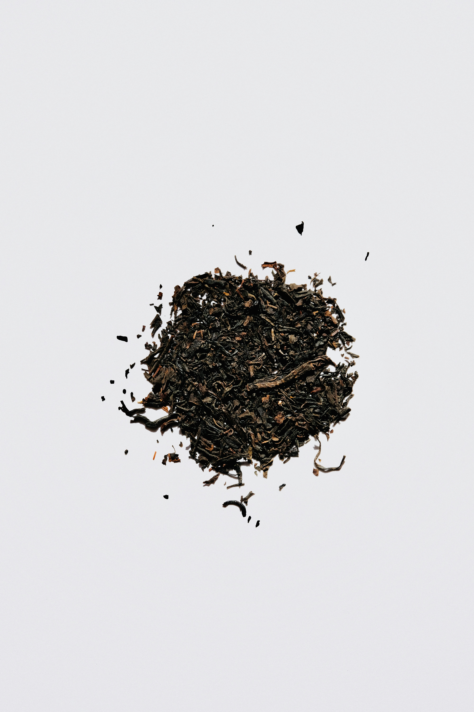
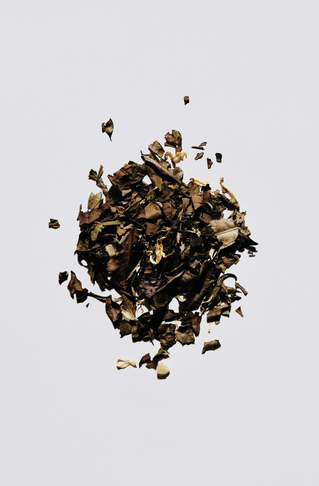
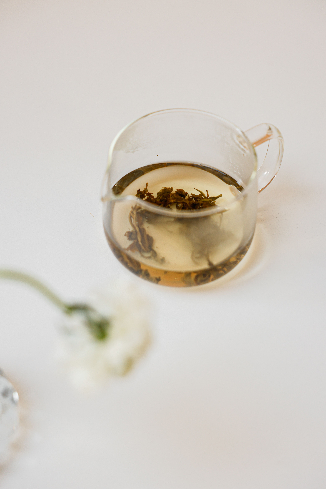
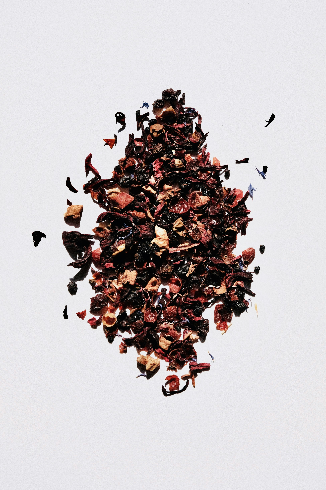

Our Products
Four small-batch blends, each sourced directly from the farms that grow them. Every bag is packed by hand and dated with its harvest, so you always know exactly what you're steeping.
Bestseller

Midnight Black
A bold, malty black tea grown at high elevation and dried the traditional way for a deep, brisk cup.
$14
Caffeine-Free

Chamomile Dream
A soft, floral herbal blend built for slow evenings — light honey notes with no caffeine to keep you up.
$12
New

Hibiscus Rose
Tart hibiscus petals blended with rose and a touch of citrus peel, best served over ice.
$13
Staff Pick

Morning Jasmine
Green tea leaves scented with fresh jasmine blossoms for a light, fragrant cup to start the day.
$15